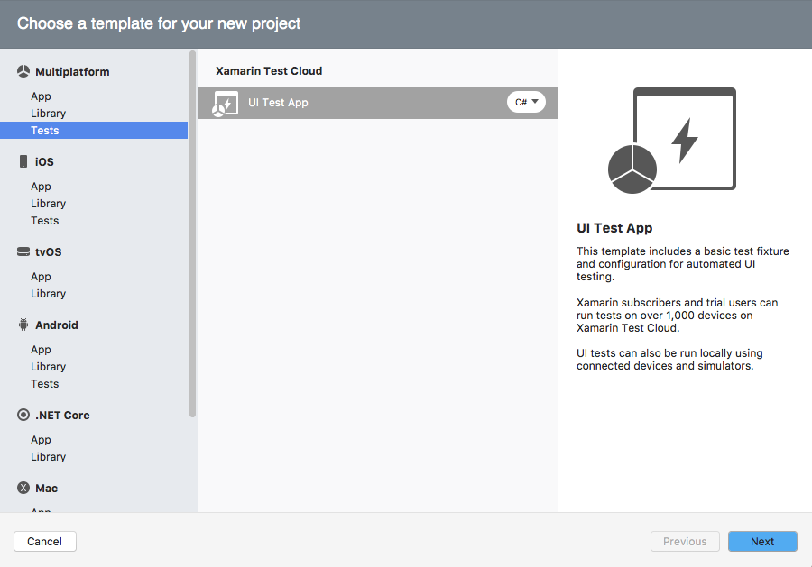
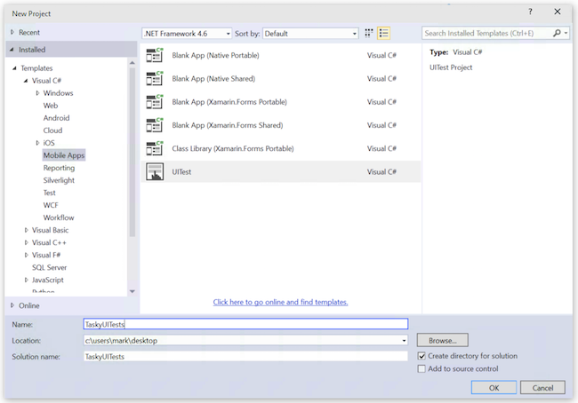

Duration
~5 minutes
Goals
Xamarin.UITest is an automated User Interface Testing framework that allows developers to write and execute tests to validate the functionality of the user interface of iOS and Android apps. Xamarin.UITest leverages NUnit to perform tests.
The goal of this exercise is to create a new Xamarin.UITest project and get it to compile. This is intended to be a group exercise done in tandem with an instructor, but you can follow the instructions here if you want to do the exercise on your own.
Steps
Create a new Xamarin.UITest project
Let's start by creating a new UITest project. This allows us to test either iOS apps, Android apps, or both.
-
Create a new Cross-Platform Xamarin.UITest project.
- On Visual Studio for Mac, this is under Multiplatform > Tests, then select the UITest Project. 
- In Visual Studio 2015 on Windows, this is under Visual C# > Cross-Platform, on Visual Studio 2017 on Windows, this is under Visual C# > Multi-Platform; select the UITest App project type. 
- Name the project TaskyUITests.
- Once created, update all nuget packages added to the project.
Explore the created project
Next, let's look at the created files. If you expand the project, you will find two source files (this assumes you used the cross-platform version of UITest and not a platform-specific project which will only have one file).
| Source File | Description |
|---|---|
| AppInitializer.cs |
This source file defines a class, AppInitializer which is used to configure the UITest. It has a single static method named StartApp which will be called from each TestFixture to initialize the test before it runs. The method is passed the platform to initialize the test for (iOS or Android).
|
| Tests.cs |
This is the actual tests which will executed. This source file contains a single NUnit TestFixture with a single Test as well as a SetUp method to initialize the test (by calling the above mentioned StartApp method).
|
When building UITests, you will duplicate the Tests.cs file and create test fixtures to test the various UI aspects of your application. There's no rule on how many you use - you can have one if you like, remember we are building acceptance tests here, not unit tests. But, you will likely find having multiple fixtures will make the testing code a bit easier to navigate.
- Build the project and ensure it compiles. We'll use this project in the next exercises to perform UI tests on an existing application.
Summary
Congratulations, you have successfully created a Xamarin.UITest acceptance testing project - in the next exercise we will fill it in with tests to execute against an existing application.